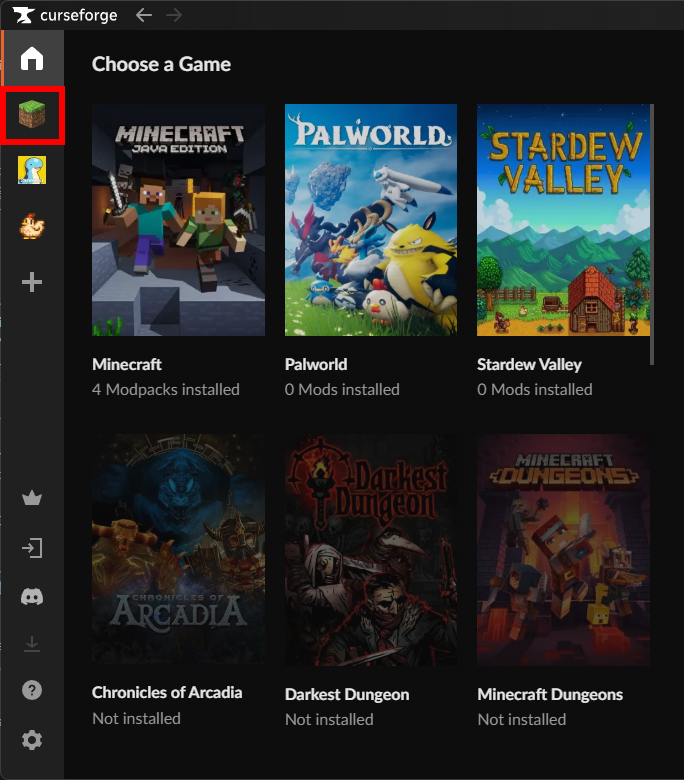
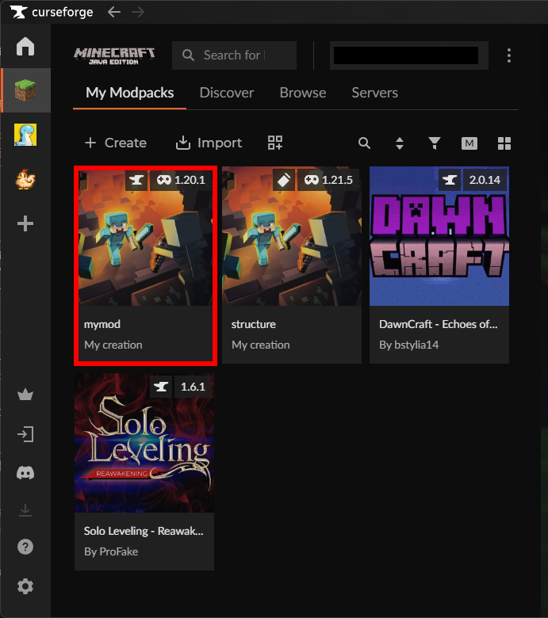
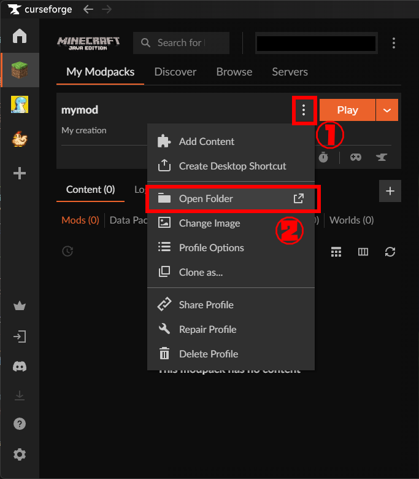
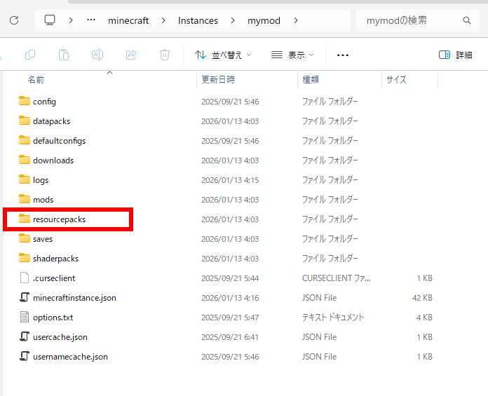

- CurseForgeを起動し、「Minecraft」タブを開きます
- 「My ModPacks」から、適応したいインスタンスをクリックします
- インスタンスの右側にある「…」（三点リーダー）をクリックして、「Open Folder」を選択します
- 開いたフォルダ内の
resourcepacksフォルダを開きます

「Minecraft」タブを開く

適応したいインスタンスをクリック

CurseForgeのインスタンスから「フォルダを開く」を選択

resourcepacksフォルダを開く
以降は、1-2. 日本語化パックをダウンロードから同じ手順で進めてください。